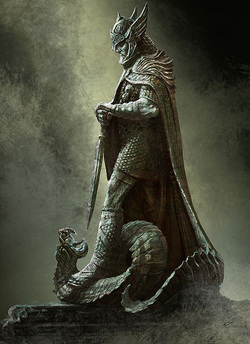
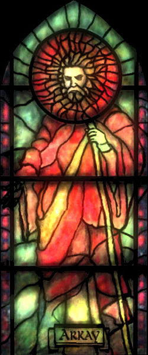
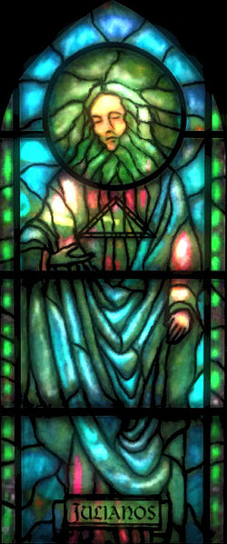
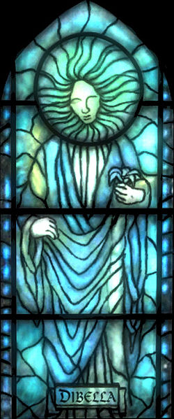
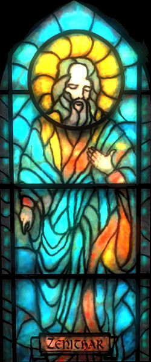
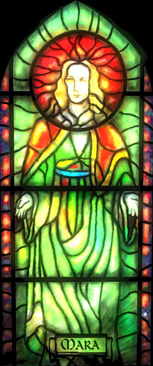
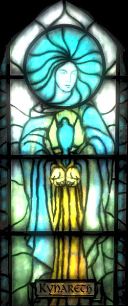
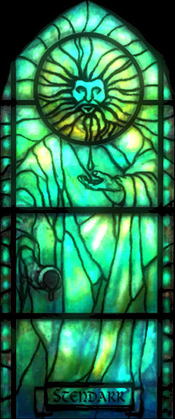

Os 9 divinos
Talos/Tiber Septim

Herdeiro do Trono Imperial, Talos é o mais importante herói-deus da humanidade. Em sua forma mortal, conhecido como Tiber Septim, ele conquistou toda a Tamriel e inaugurou a Terceira Era. Após a morte, seu espírito subiu aos céus para se tornar o mais jovem das 9 Divindades e, sob seu nome de nascimento de Talos. Também chamado Ysmir, 'Dragão do Norte ".
Akatosh, o Deus Dragão

Akatosh é a principal divindade das 9 Divindades, seu avatar é um dragão, e ele é frequentemente chamado de Deus Dragão do Tempo. Ele é geralmente considerado o primeiro dos deuses a se formar no lugar Início; depois de sua criação, outros espíritos encontraram o processo de ser mais fácil. O Aedra é o Deus supremo do Império, onde ele encarna as qualidades de resistência, invencibilidade e legitimidade eterna, promovendo as virtudes do dever, obediência, do serviço . Akatosh é pensado para ser o pai de todos os dragões, e seu líder Alduin foi intitulado "primogênito de Akatosh". Akatosh é o patrono da Capela Akatosh, a ordem religiosa dedicada à adoração e glorificação dele, que se referem a ele como o "Grande Dragão".
No ano 433 da Terceira Era, Akatosh apareceu em Tamriel como um avatar flamejante, diante o sacrificio do último descendente de Tiber Septim, Martin Septim, assim, nenhuma porta para Oblivion poderia ser mais aberta.
Arkay

Arkay é membro das 9 Divindades, e é também um deus popular em outras culturas. Arkay é muitas vezes mais importante nas culturas onde seu pai, Akatosh, é relacionado ao tempo. Ele é o deus dos enterros e ritos fúnebres, e às vezes é associado com as estações. Seus sacerdotes são adversários ferrenhos da necromancia e todas as formas de mortos-vivos. Presume-se que Arkay não existia antes o mundo foi criado pelos deuses. Por isso, ele é às vezes chamado de Deus os mortais ".
Julianos

Julianos é o deus Cyrodilico da literatura, direito, história, e contradição. Ordens de monastérios fundados por Tiber Septim e dedicados a Julianos são os guardiões dos Elder Scrolls.O simbolo de Julianos é um triângulo.
Dibella

Dibella, conhecida como a "Rainha do Céu, é a popular Aedric "deusa do amor" das 9 Divindades. Em Cyrodiil, ela teve muitos cultos diferentes, vários dedicados a mulheres.Ela é geralmente retratada como uma mulher voluptuosa e atraente humanos, muitas vezes, ou segurando flores grandes ou realmente ter flores no lugar das mãos.
Casas de culto dedicados a ela são chamados Casas do Dibella, embora eles também são conhecidos como capelas ou templos. Ela tende a atrair pessoas que vivem e defendem um estilo de vida epicurista.
Zenithar

Zenithar, o Deus de Trabalho e Comércio,é uma das 9 Divindades.
Zenithar é a divindade da riqueza, trabalho, comércio e comunicação.Ele tem fortes laços com High Rock e Cyrodiil.
Os seus sacerdotes ensinam que o caminho para a paz e prosperidade é através do trabalho sério e honesto lucro, não através de guerra, roubo derramamento de sangue. Zenithar é visto como um deus guerreiro, mas um que é contido e reservado em tempos de paz.
Ele é pensado para ser associado com Kynareth, bem como uma grande estrela azul, às vezes vista nos céus de Tamriel.
Mara

Mara, Deusa do Amor, padroeira da terra abundante, e fonte de compaixão mortal e compreensão. Quase reverenciada como uma deusa universal, suas origens estão nos tempos míticos como uma deusa da fertilidade. No Império, ela é deusa-mãe, adoraram as benevolências de Mara. Ela às vezes é associado com Nir do "Anuad ', o princípio feminino do cosmos que deu origem à criação.
Kynareth

Kynareth é a deusa dos céus, os ventos, os elementos, e os espíritos invisíveis do ar. Ela é membro das 9 Divindades e padroeira dos marinheiros e viajantes.
Kynareth é muitas vezes invocado para estrelas auspiciosas no nascimento e para a boa fortuna na vida diária.
De acordo com os seguidores das 9 Divindades, a Deusa dos céus Kyne, adorada pelos Nórdicos como o mais forte dos espíritos do céu e viúva de Shor, é o aspecto nórdico de Kynareth.
Stendarr

Uma das 9 Divindades, Stendarr evoluiu de suas origens nórdicas em uma divindade de compaixão ou, às vezes, governo justo pela força e paciência misericordiosa. Stendarr é a inspiração de magistrados e governantes, e o patrono da Legião Imperial. diz-se que ele acompanhou Tiber Septim em seus últimos anos.
Depois da Crise de Oblivion, uma ordem de guerreiros santos foi fundada. Os vigilantes de Stendarr são dedicados a eliminar Daedra e quaisquer outras abominações (como vampiros, lobisomens, bruxas e necromantes).